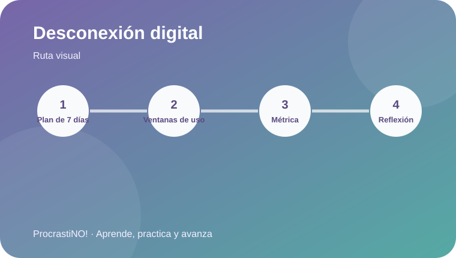
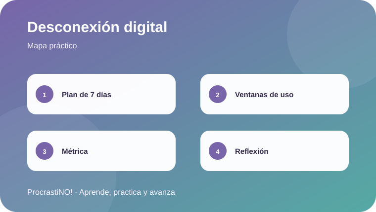

Módulo 4 · 4
Desconexión de redes durante exámenes
Experimenta durante siete días con límites definidos, ventanas de uso y una métrica de seguimiento.


Un experimento de siete días
Define una ventana concreta para revisar redes, evita las notificaciones durante el estudio y registra una sola métrica, como minutos de uso recreativo al día. La evidencia reciente encuentra asociaciones entre uso fuera de tarea y rendimiento académico, pero no permite asumir causalidad en todos los casos.
📵 Límites
🕒 Ventanas de uso
📈 Una métrica
Idea clave:
Prueba durante siete días y compara tus datos con tu propia semana anterior.
Checklist completado:
0
/ 4
Referencias
-
Pyhältö, K., Rekola, H., Salovuori, S., Kosola, S., & Anttila, H. (2025). The relationship between academic achievement and off-task social media and smartphone usage: Evidence from a systematic literature review. Acta Psychologica, 260, 105645. https://doi.org/10.1016/j.actpsy.2025.105645
Salari, N., Zarei, H., Rasoulpoor, S., Ghasemi, H., Hosseinian-Far, A., & Mohammadi, M. (2025). The impact of social networking addiction on the academic achievement of university students globally: A meta-analysis. Public Health in Practice, 9, 100584. https://doi.org/10.1016/j.puhip.2025.100584